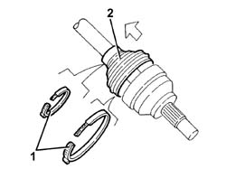
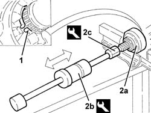

2710A20 WHEEL END CONSTANT VELOCITY JOINT (ONE), L/H OR R/H - R + R WITH DRIVE SHAFT REMOVED - INCLUDES BOOT REPLACEMENT
- Path
- Procedures > 27 AXLE > 2710 FRONT AXLE > 2710A DRIVE SHAFTS AND JOINTS > 2710A20 WHEEL END CONSTANT VELOCITY JOINT (ONE), L/H OR R/H - R + R WITH DRIVE SHAFT REMOVED - INCLUDES BOOT REPLACEMENT
- Kind
- repair procedure (removal / refitting; the operation number is the code)
- Applies to
- all engines; all production periods
- Interactive page
- https://sloeber94.github.io/elrnDB-aGt/en/#/125001300
Applies to: engines: 2.0 JTS, 3.2 V6, 1.9 JTD 16V; all production periods
 Removing
Removing
 Refitting
RefittingPlace the drive shaft in a vice fitted with protective jaws.
1. Remove the boot retaining bands.
2. Push the boot back.

Applies to: engines: 2.0 JTS, 3.2 V6, 1.9 JTD 16V; all production periods
1. Open out as much as possible the circlip locking the constant velocity joint, wheel side.
2. Remove the wheel side constant velocity joint (2a) using the tools (2b) and (2c).
 | Name | Country |
|---|---|---|
2b | Counter weight | 1.821.161.000 |
| Name | Country |
|---|---|---|
2c | Adaptor | 1.821.165.000 |

Applies to: engines: 2.0 JTS, 3.2 V6, 1.9 JTD 16V; all production periods
Remove the circlip locking the constant velocity joint, wheel side.
Remove the boot.
Applies to: engines: 2.0 JTS, 3.2 V6, 1.9 JTD 16V; all production periods
Refitting
RemovingClean the residual grease of the components and check their condition.
Fit a new gaiter on the drive shaft.
Refit the constant velocity joint, wheel side, back in its seating complete with a new circlip.
Refit the gaiter back in its seating, then fill it with the recommended grease.
 | Type | Component | Name | Qty. |
|---|---|---|---|---|
- | Grease (g) | WHEEL END CONSTANT VELOCITY JOINT | Tutela MRM2 | 80 |
Secure the gaiter with the retaining bands.
Remove the driveshaft from the vice.